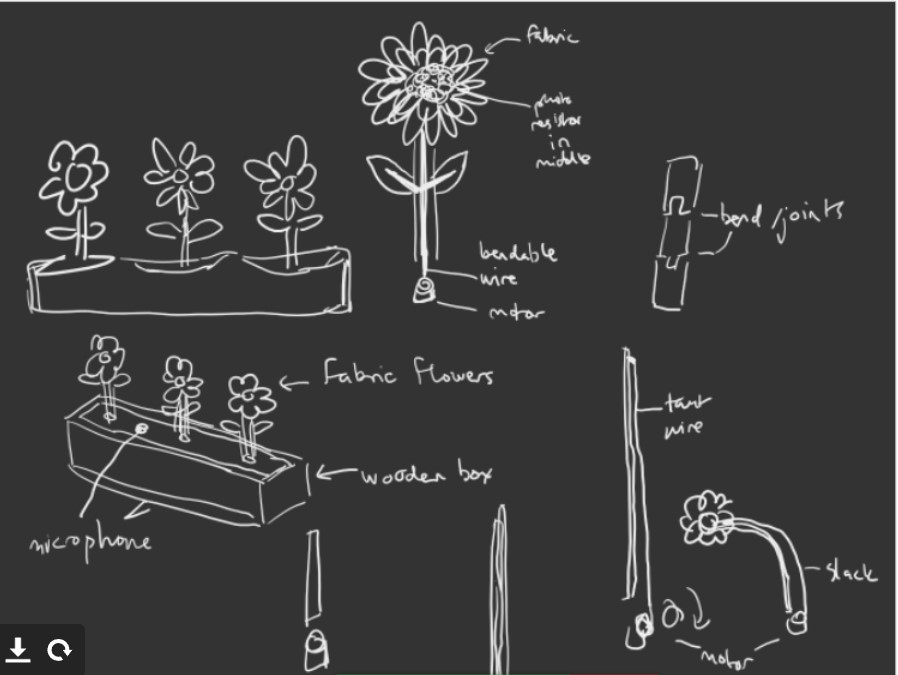

This object course focuses on ways to integrate sensors, motors, and simple electronics into interactive objects. Core interaction design concepts include user observation, affordances, and human-centered design. The content below provides an snippet of information of what projects I have made.
My group and I created a flower bed that reacts to the environment around it, the state of the flowers are influenced by touch and volume level. This design shares a meaning and provokes thought around emulation of natural responses, going beyond nature with the capabilities of technology. The flowers move back and forth based on touch in a room and change colors based on sound.
The Text course introduces students to important skills in graphic design, centered around the effective use and understanding of typography. The course is broken into a lab and a lecture component. The lectures will provide both a practical understanding and a historical background of typography. The lab component of the course will be where students hone their typographic skills using industry standard vector-based design software Projects span digital and print environments and include an expressive book, and informational poster, and an interactive infographic.
This content below provides some insight into the makings of infographic content and organizing them into a sleek and clean look.
This is a packaging idea that was made with adobe illustrator and dimensions.
This course supports development in important skills like sound synthesis, interactive sound, narrative audio and other topics in music technology. We will study the history of electronic music and examine various forms of interactive/narrative audio including sonic art installations, musique concrete, radio storytelling, interactive audio for games, film audio, and more. Students will learn how to use the computer as a tool in audio production, music composition, arranging, and sound design to use sound most effectively in engaging their audience.
In this project below, I took some footage of a video game called CS:GO and added in my own audio to sync up with the interactions.